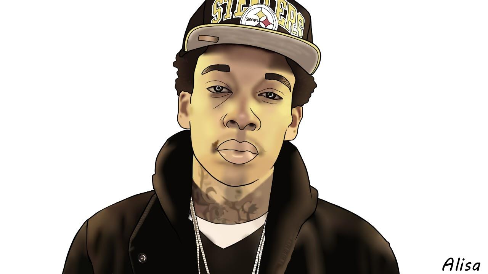
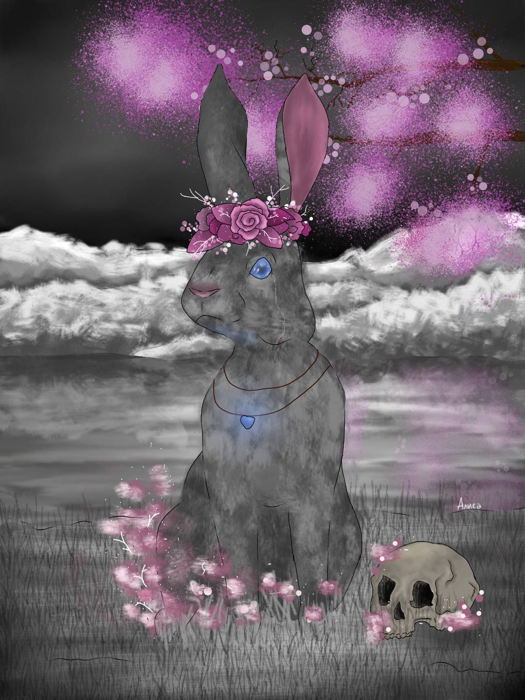
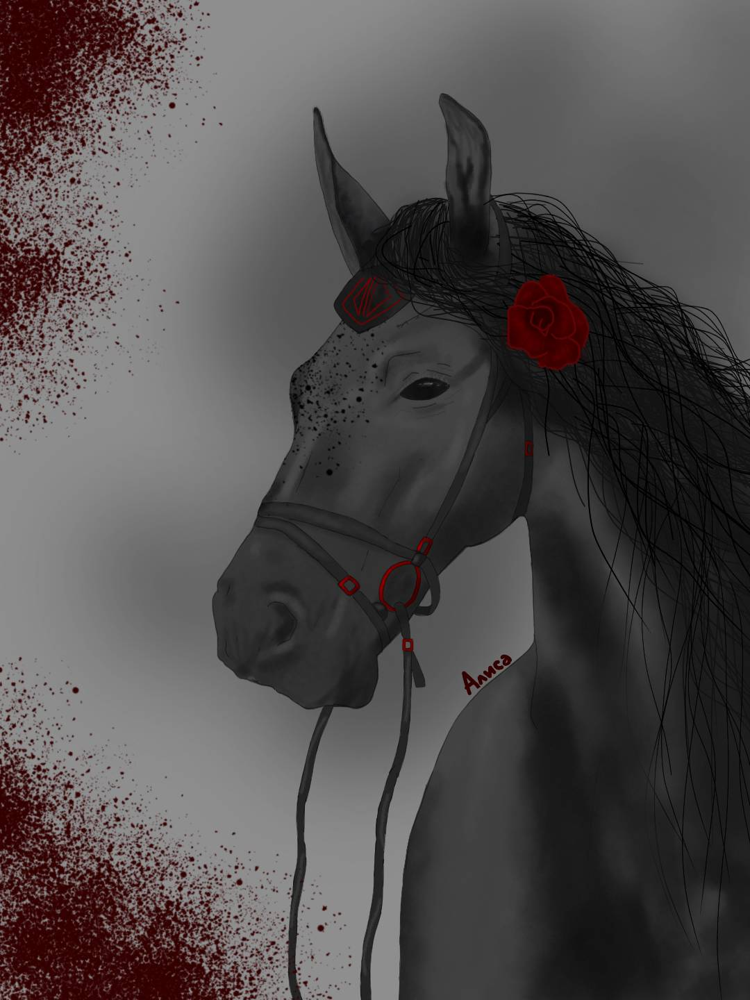

Exploring creativity through digital mediums and artistic expression
In my spare time i like to do digital art, it keeps me creative and calm. I first started doing it in 2017. If you are interested, I can do one for you, also. Feel free to contact me.